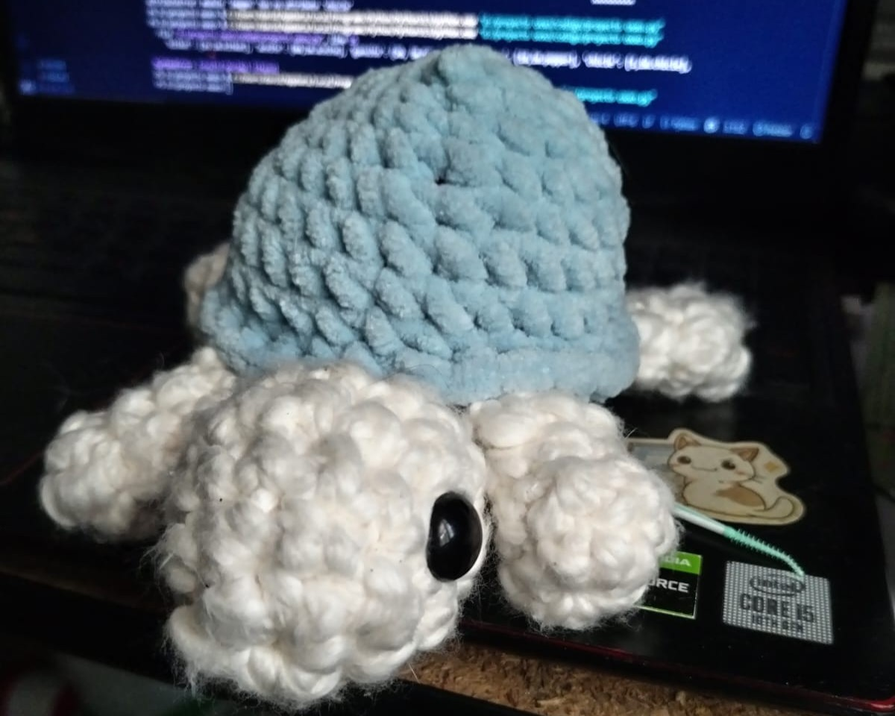
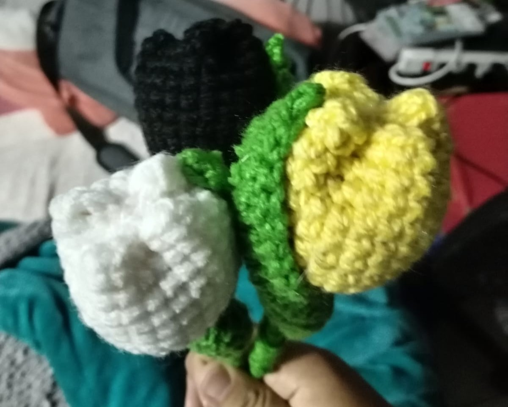

CROCHET THINGS I MADE
DISCLAIMER: I AM NOT A CROCHET EXPERT,I DON'T MAKE COMMISIONS, I JUST LIKE TO MAKE THINGS WITH MY HANDS, SO I DECIDED TO MAKE THIS WEBSITE TO SHOW SOME OF THE THINGS I MADE WITH CROCHET(and for the english project).
DISCLAIMER: I AM NOT A CROCHET EXPERT,I DON'T MAKE COMMISIONS, I JUST LIKE TO MAKE THINGS WITH MY HANDS, SO I DECIDED TO MAKE THIS WEBSITE TO SHOW SOME OF THE THINGS I MADE WITH CROCHET(and for the english project).
"To steal the life of its target, it slips into the prey’s shadow and silently waits for an opportunity."
he was boring to make and a headache,but not gonna lie, he looks great(i'm really proud of the smile, i didn't use any kind of fabric, it's only yarn and some hardwork).
pattern"This Pokémon uses its ribbonlike feelers to send a soothing aura into its opponents, erasing their hostility."
my personal favorite, it was torture to make it but look at him, he's so cute, he deserves love(it looks pretty silly and my favorite part is the eyes, they're made of yarn and look so lifeless yet so funny, i adore this creature).
pattern"Manta rays are large, graceful creatures that glide through the ocean with their wide, wing-like pectoral fins."
this one was for the enac, it was easy to make and i didn't really put a lot of effort but i'm still hold a grudge when the judges call it a craft instead of handmade craft(it was rigged, mine wasn't the best but the winner's either)
pattern"Unicorns are mythical creatures with a single, spiraling horn on their forehead."
my brother asked for it, it was a gift for someone but he never really gave it so... it's just sitting in the shelve, i really like how it looks, but its a constant reminder of using the correct hook and yarn(you can see the filling(it's green(i took plushies appart and filled it with their filling)))
pattern"This Pokémon lives in dark places untouched by sunlight. When it appears before humans, it hides itself under a cloth that resembles a Pikachu."
what a cuttie, he's hanging like a japanese weather doll if you were wondering, he just likes to do that, he's often my needle holder... i can't control myself, he just really looks like a voodoo doll
pattern"Turtles are reptiles known for their hard shells, which provide protection from predators and environmental hazards."
i just made this a very boring day trying out my new 100% cotton yarn and extra large safety eyes(and some poliester for the shell), an easy and relaxing pattern, it ended up as a gift for my dad(i wasted all his gift money in yarn... i'm not proud of that)
pattern

"Tulips are spring-blooming perennial plants with showy flowers that come in a variety of colors."
a basic pattern i the teacher showes us in the arts and craft classes, i tried selling them but nah, at least it's easy and looks good
pattern"Octopuses are intelligent marine animals known for their ability to change color and shape, as well as their eight arms."
this one is just a test subjext i made with a brand new chunky yarn, i like how silly he looks
pattern